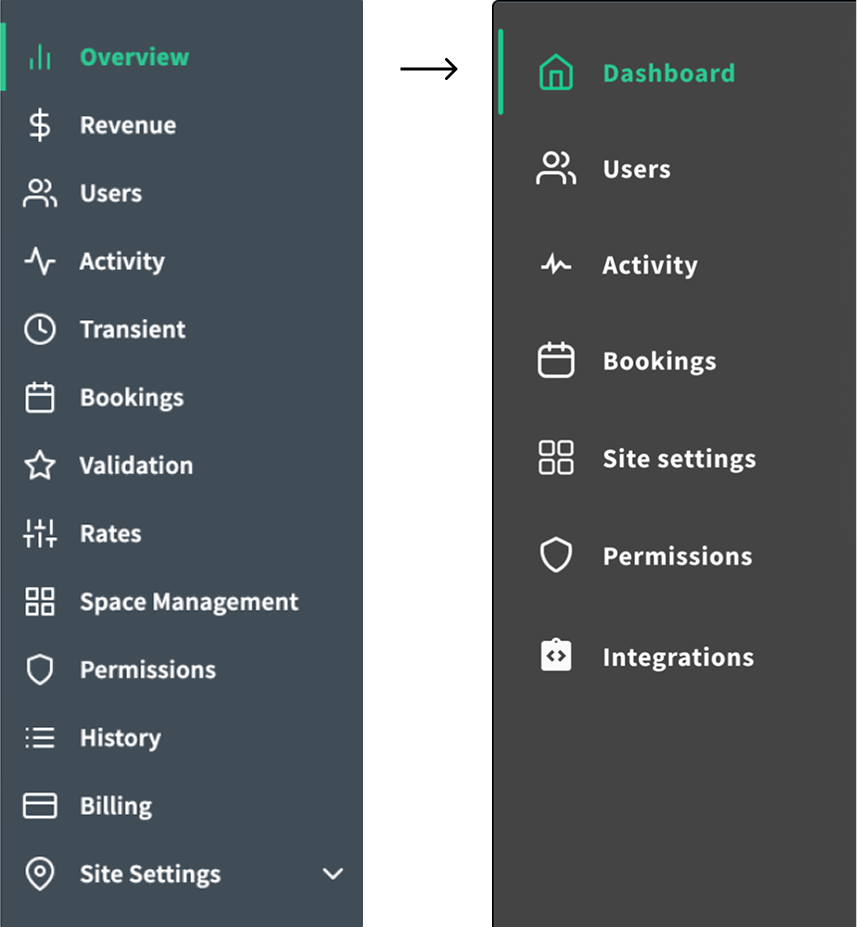

Shristi Gartaula
Revamping the Dashboard
timeline story layout
for a client's parking site management application
phase 01 · discovery
overview
The client's parking site management app worked well technically, but when presenting to executives for buy-in, UI elements like the sparse dashboard and bloated navigation menu made it challenging to showcase the app's value proposition effectively.

phase 01 · discovery
approach
In an interview workshop setting with the client, I facilitated and adopted the perspectives of two key individuals for user interviews:
- Subject matter expert & Product owner — to understand the underlying business logic and its product goals and value proposition.
- New user — to define user flows of daily users, what problems they are trying to solve and why it's needed.
It revealed the core usability issues that the interface needed to address, especially on the main dashboard. By defining it as a workshop, the client could participate in the design solution and help narrow the project scope to pertinent screens and user flows.
phase 02 · solution
map as anchor for all user flows
The map is the first element users see on the updated dashboard. It's intentionally laid out to visually reflect the physical space that site managers work with in their mental model.
- Apply affordances to guide users from one dataset to another
- Find opportunity to use spatial assets to reduce information overload
- Use visuals and typography to organize different types of menu item content
- Where important information is far too complex, avoid showcasing more than necessary

Existing static table data is transformed into concise charts to reduce visual clutter and improve data comprehension. Originally, entire pages were dedicated to static information.
phase 02 · solution
allow for gradual reveal
To avoid information overload, users are introduced to data content gradually, depending on where they are in the user flow.
- Static data from tables become graphical charts to reduce visual clutter and improve data comprehension.
- Pie charts frame the rest of the content displayed in the Dashboard. Interacting with each pie chart reveals specific location details intentionally designed within the map container.

phase 02 · solution
updating the app to match users' mental model
Besides visual cues, the app's content structure and information architecture did not entirely match the users' mental model. Based on how the original app was presented, I assumed users would:
- Think of tracking or monitoring data they wanted to search for first
- then think about the parking location that pertains to this data
Turns out it's the other way around —
- Users manage multiple parking locations, and therefore they think and complete tasks in terms of one unique location at a time
- The job the user has to do is the same across parking locations but the data set is unique to that specific location
phase 02 · solution
define dashboard by data volatility
By data volatility, I mean the degree to which any given data that the user sees on the application changes over time. By clarifying the user's mental model, we know what kinds of data they prioritize — and this data is largely unchanging or static.
- Static data grouped into cards: relatively unchanging data (low data volatility) was more important for the dashboard — static data like location and users were the first association to any application task.
- Transient data grouped selectively: frequently changing data like tracking vehicles entering or exiting a building was affecting other elements in entirely separate sections of the menu, without notifying the user (!). Entity relationship diagrams helped me group data by volatility and relevance.

phase 03 · challenges
challenge #1: cluttered sidebar menu
The original menu had 13 items and little affordances to inform users of what tasks or activities are within each one.
phase 03 · challenges
how I tackled it: three steps
With a set of questions in hand, I sought to understand the current tasks users completed on each of the linked pages. Answers also clarified and aligned assumptions for everyone involved in the project.

With the purpose of each screen defined, I was able to construct the relationship between product, people, and the system and where the intended business goals fit.

Equipped with definitions of the screens and their value for the business, I measured the total actions users took for each of the 13 pages and charted them against task priority. The results helped narrow down the navigation bar content by half.
phase 03 · challenges
challenge #2: unknown system status
While consolidating the menu, I learned that pages within the menu items had forms, live data tables, and auto-updating components that trigger system-wide changes without users' awareness.
For example, updating parking fees for one vehicle could change the billing cycle across multiple accounts without the user knowing. This was a key business selling point but there was no observable UI to reflect these status changes.

The simpler the relationship, the better the content will be for a dashboard.
phase 03 · challenges
the 2×2 framework analysis
I used data already gathered from menu item interactions and applied a 2×2 framework to look at the relationship between menu items and their interaction with each other.
The higher the priority and the fewer interactive actions, the better the content fits within the dashboard instead of the navigation bar.

The higher the priority and the less it triggers unknown changes, the better the content works for the dashboard.
phase 04 · extra solution
using physical documents to inspire screen design
As a separate screen within the application, I was asked to brainstorm ways to design for a set-up wizard onboarding new parking sites. The current application had multiple paged forms that took a long time to complete — and weren't entirely comprehensible.
I advocated for translating physical documents into understandable UI screens as closely as possible to the physical task users have to do: taking users' very first step in mapping new parking sites (using a clipboard and pen to jot down site numbers) and drawing UI solutions that support the respective physical task.

This complex UI screen was presented as a starting point for further discussions. Designed with airline seating reservation flows as inspiration.
phase 05 · reflections
reflections on the project
- Biggest challenge: finding ways to simplify dataset relationships by business value.
- Quick win: applying heuristic patterns (e.g., "more info = more confusion") to meet the project goal of making the design easy to understand when presenting.
- The client had a vague idea of the desired final visual so our discussions were often a delicate balance of ideating and defining at once.
-
I was often wary of accepting client design changes — not out of defiance but because
I lacked the client's depth of knowledge of the product. I couldn't justify all their
design change requests, but I also couldn't deny that I didn't know as much as they did.
- But, I quickly trusted the client's feedback. On reflection, it was because of the client's efforts in making me feel involved in their discussions despite my lack of product knowledge. I felt valued.
- This trust was impactful and personally meaningful; it led to a positive work experience that reinforced the value of collaboration and kept timelines on track.
- This project continues to remind me of why I love design: the best work happens when strong relationships come first.